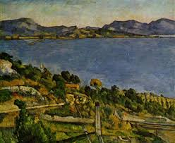
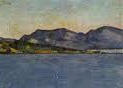
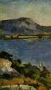
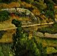
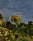

Le Golfe de Marseille vu de l'Estaque
par Paul Cezanne
    
Le tableau à été peint entre 1878 et 1879. Il est conservé au musée d'Orsau.Il représente le golfe de Marseille, lieu auquel Cezanne est profondément attaché puisque c'est ici que Cézanne à passer une grande partie de son enfance.
Selon l'
IA
Retour au
sommaire